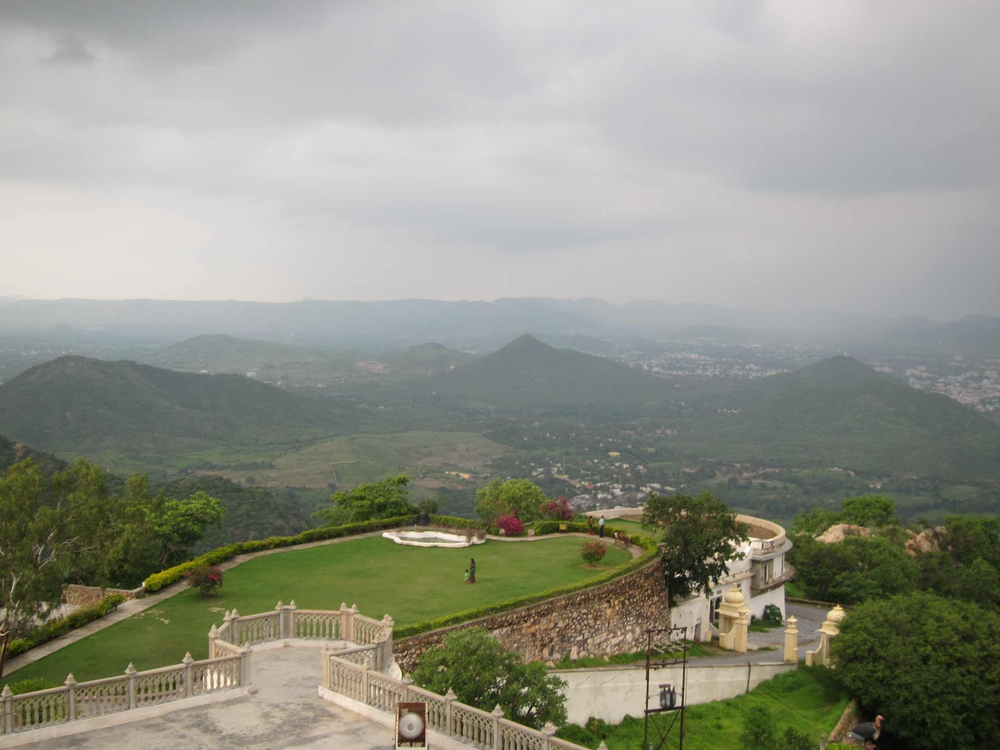
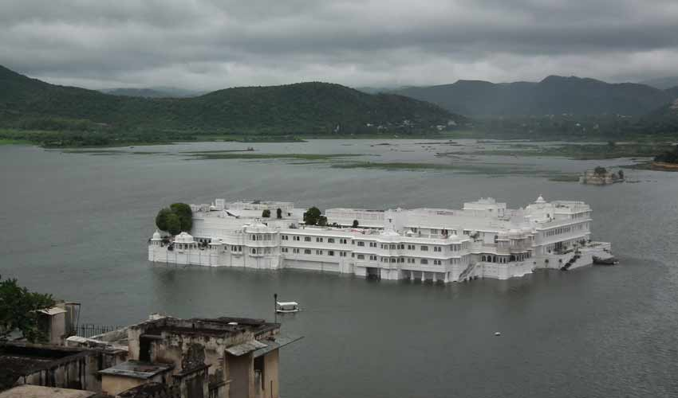

1 / 3

Caption one
2 / 3
Caption Two
3 / 3

Caption Three
3 / 3

Caption four
3 / 3
Caption five
Udaipur during monsoon season feels pleasant and relatively less humid, given the relief it witnesses from the scorching heat of summers. The monsoon knocks on the city’s door around July and stays until September, wherein the rain showers are meagre, around 637 mm. The temperature stays between 33 degrees to 23 degrees Celsius, with early morning and late evenings being a little breezy at times. All in all, the season doesn’t affect sightseeing four tourists at all, rather brings the ‘city of lakes’ to life. should visit during the monsoon season in and around Udaipur.With another few couple of days left to enjoy the soothing monsoon season of Udaipur, we’ve decided to ease your task of deciding where to land as soon as the clouds start showering in Udaipur; natives of Udaipur are much familiar with most of the places listed below, but for the tourists: ‘The Trip to Udaipur’ will transform into ‘The Ultimate Trip to Udaipur’ if they add these places in their itinerary in this monsoon season. Udaipur, the erstwhile historic capital of the Rajputs has a stronghold presence in Indian history and continues to hold its rightful place as one of India's most beautiful destinations. A confluence of painstakingly created monuments and man-made lakes along with the surrounding vegetation, makes Udaipur a must-see travel destination in India. Udaipur located in Rajasthan has many popular tags associated with it such as the 'City of Lakes' owing to the many lakes that dot the city; the Lake Pichola, the Fateh Sagar Lake, the Udai Sagar Lake etc. It also has imposing palaces, delicately sculpted temples and gardens. Here is a look at some of the important places to see in Udaipur that are ideal monsoon spots this season. Morning you are getting drenched in sweat because of the heat and afternoon you are dipping yourself in the first rain showers in Udaipur. Rains have arrived early this year and we the people of Udaipur, have gotten another chance to step out of our houses. It’s weekend and who doesn’t want to enjoy!!!